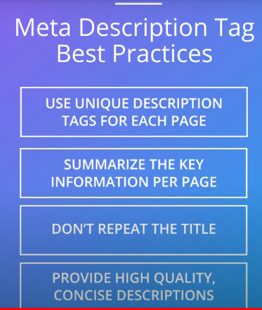

Meta tags-->pieces of text that get put inside the HTML code of a website,meta tags are a way of labeling content and guiding the search engine without interfering with the user experience
Title Tag-->Tells search engines what the content on the page is all about, it's the title that will be displayed on the search engine results page, title tag will also be shown on the top of the browser

Meta Description Tag-->Provides a summary of the content of the page(135-160 characters)

Keyword Tag-->no longer relevant or important,search engines don't pay attention to this anymore, many developers leave them blank, search engines now rely on assessing the visible text on a sites and use text analysis of that visible text to determine what is relevant